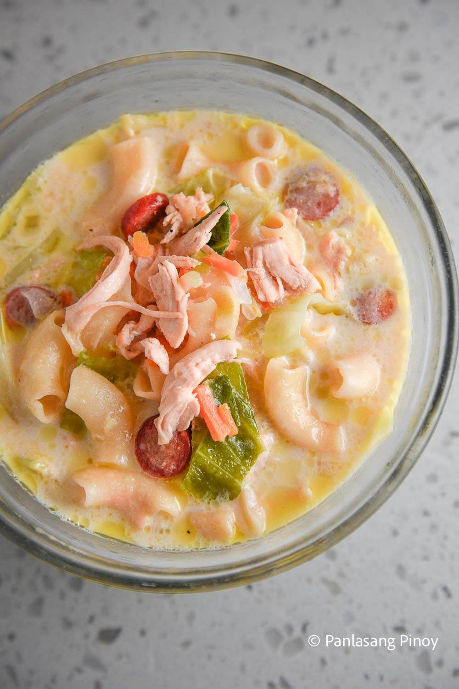

|  |
| Ingredients | Hotdog 4 cut into pieces) Chicken (about 1 lb, cut into pieces) Water (6-8 cups) Onion (1 medium, chopped) Garlic (2-3 cloves, minced) Carrots (1-2, diced) Celery (1-2 stalks, diced) Elbow macaroni (1-2 cups) Salt and pepper (to taste) Patis (optional, for flavor) Bay leaf (1-2, optional Coconut Milk or cream (1 cup, for creaminess) Green onions (for garnish) |
|---|
| Guide How To make Taho |
| In a large pot, heat a bit of oil. Sauté the onion and garlic until fragrant Then Add the chicken or pork pieces and cook until they are browned then Pour in the water and bring to a boil. Add the bay leaf, and let it simmer for about 30 minutes, or until the meat is tender after that Add the carrots, celery, and elbow macaroni. Cook until the pasta is al dente then Add milk or cream, and season with salt, pepper, and fish sauce to taste. Simmer for a few more minutes after that Garnish it with chopped green onions and youre done. |